General user interface and functions#
The Tiny Data Viewer#
The “Tiny Data Viewer” application is started from the Tiny IDE: in the main menu, click on Tools -> Tiny Data Viewer. The screenshot below shows an example

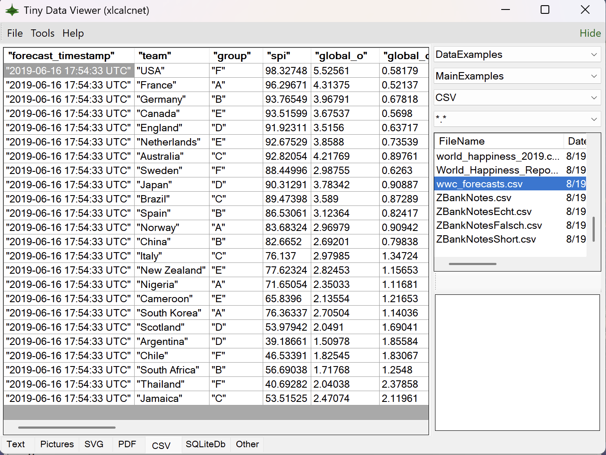
The “Tiny Data Viewer” application is designed around the structure of the DataXlCalcNet folder, making it easy to navigate and manage existing data sources, as well a new data provided by the user.
The Tiny IDE can be used only to view data sources which are located in the DataXlCalcNet folder and are located in subfolders beginning with Data. The data source examples are organized in a tree structure, which is shown in the right panel (the “folder panel”) of the “Tiny Data Viewer” application.
The left panel (the “data panel”) of the “Gallery of Plots” application displays the data of the selected file. This panel has 7 tabs: “Text”, “Pictures”, “SVG”, “PDF”, “CSV”, “SQLiteDb”, “Other”.
Each file in the DataXlCalcNet\Data* folders can be opened in the “Tiny Data Viewer” application by clicking on it. Per application instance, only one file can be opened and displayed at a time (to open an additional file, you need to start a new instance of the application: Tools -> Tiny Data Viewer (external)).


Source code#
The C# source code for the data viewer can be found here: duhadler/XlCalcNet
The Output Monitor#
The “Output Monitor” application is started from the Tiny IDE: in the main menu, click on Tools -> Output Monitor. The screenshot below shows an example

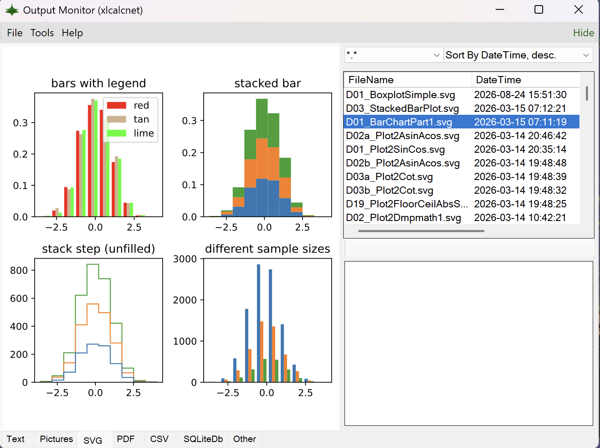
The “Output Monitor” application is designed to be used together with spreadsheet functions, when the output is a table or a graphics file, and it it not convenient to incorporate the output into the spreadsheet right away.
The folder which is monitored is PathToLocalAppDara\\XlCalcNetIDE\OutputMonitor. Whenever a file changes or is newly created in this folder, the “Output Monitor” application is updated.
The Tiny IDE can be used only to view data which are located in the OutputMonitor folder. The files in this folder are organized in a tree structure, which is shown in the right panel (the “folder panel”) of the “Output Monitor” application.
The left panel (the “data panel”) of the “Gallery of Plots” application displays the data of the selected file. This panel has 7 tabs: “Text”, “Pictures”, “SVG”, “PDF”, “CSV”, “SQLiteDb”, “Other”.
Each file in the DataXlCalcNet\Data* folders can be opened in the “Output Monitor” application by clicking on it. Per application instance, only one file can be opened and displayed at a time (to open an additional file, you need to start a new instance of the application: Tools -> Output Monitor (external)).
The menu bar of the application#

The Menubar of the “Output Monitor” application contains the following menus: File, Tools, and Help. Each menu contains a number of items, which are described below.
There are also a button (with green foreground color) in the menu bar: the “Show/Hide” button, which toggles the visibility of the folder panel.

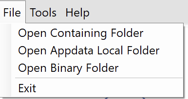
In the File menu, two standard items are missing: “New” and “Open”.
The “New” item is missing because the application is designed to view existing data, not to create new data.
The “Open” item (which would typically open a dialog box with the functionally of the Windows Explorer) is missing because the “Output Monitor” application limited to the OutputMonitor folder. Instead the folder panel allows to navigate through the DataXlCalcNet folder and open any file in it.
Renaming or deleting files and folders is possible, but should be done with care, using the Windows Explorer. After these changes, when returning to the “Output Monitor” application, the “Output Monitor” application is updated automatically.
Open Containing Folder opens the Windows Explorer in the folder of the current file. This is useful for quickly accessing other files in the same folder, or for deleting files.
Open Appdata Local Folder opens the Windows Explorer in the AppData\Local\XlCalcNetIDE folder. This is useful for quickly accessing files and folders which are generated by running Python or C# code examples in the Tiny IDE.
Open Binary Folder opens the Windows Explorer in the Bin subfolder of the XlCalcNet installation. This is useful mostly for debugging purposes.

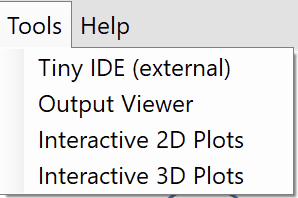
Tiny IDE starts the Tiny IDE application, see here for details.
Output Monitor (external) starts an additional instance of the the “Output Monitor” application, see here for details.
Gallery of Plots starts the gallery of plots application, see here for details.
Interactive 3D Wpf Plots starts an additional the Interactive 3D Wpf Plots application, see here for details.
Tiny Data Viewer starts the Tiny Data Viewer application, see here for details.

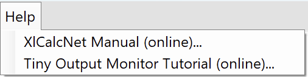
In the Help menu, XlCalcNet Manual (online)... displays the start page of the XlCalcNet online manual in a web browser.
Tiny Data Viewer Tutorial (online)... displays the section of the XlCalcNet.online manual which explains the use of the Tiny Data Viewer application in a web browser.
Source code#
The C# source code for the output monitor can be found here: duhadler/XlCalcNet
The Gallery of Plots#
The “Gallery of Plots” application is started from the Tiny IDE: in the main menu, click on Tools -> Gallery of Plots. The screenshot below shows an example

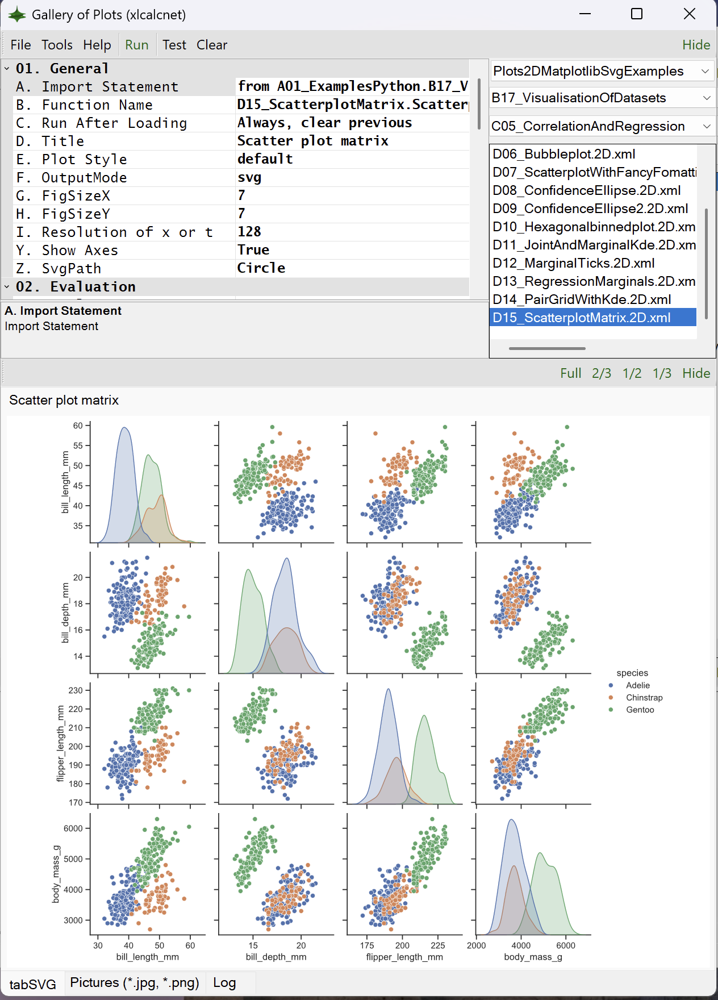
The “Gallery of Plots” application is designed around the structure of the DataXlCalcNet folder, making it easy to navigate and manage existing plot definition examples, as well a new plot definitions written by the user.
This application can be used only to edit and run plot definition examples which are located in the DataXlCalcNet folder and are located in subfolders beginning with GalleryOfPlots. The plot definition examples are organized in a tree structure, which is shown in the top right panel (the “folder panel”) of the “Gallery of Plots” application.
The top left panel (the “plot definition editor panel”) of the application shows the plot definition of the selected file, which can be edited and run. The plot definition is stored as an \(.xml\) file, but is edited in a property grid. This allows to structure the definition and to use of drop down boxes to make the definition of the plot easier.
The output of the program is shown in the bottom panel (the “output panel”) of the application, which has 3 tabs: the “SVG” tab, the “Pictures” tab, the “Log” tab.
Each file in the DataXlCalcNet\GalleryOfPlots* folders can be opened in the application by clicking on it. Per application instance, only one file can be opened, edited and run at a time (to open an additional file, you need to start a new instance of the “Gallery of Plots” application: Tools -> "Gallery of Plots" application (external)). The application will load this file into the editor, and the plot definition can be edited and run. To run the plot definition, click on the “Run” button in the main menu. The output is shown in the output panel.
The ordering and naming of the code examples in the subfolder Plots3DWpfExamples match the ordering and naming of the corresponding chapters, sections and subsections in this manual, making it easy to find the code example which corresponds to a specific section of the manual. The “section help” feature (Help -> Section Help), which is available in the main menu of the “Gallery of Plots” application and opens the corresponding section of this manual in a web browser, depends on this ordering and naming.
The menu bar of the application#

The Menubar of the “Gallery of Plots” application contains the following menus: File, Tools, and Help. Each menu contains a number of items, which are described below.
There are also two buttons (with green foreground color) in the menu bar: the “Run” button, which runs the code of the current file, and the “Show/Hide” button, which toggles the visibility of the folder panel.

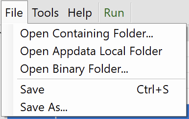
In the File menu, two standard items are missing: “New” and “Open”.
The “New” item is missing because the Tiny IDE is designed to work within the DataXlCalcNet folder, and therefore new files which are not in the current folder should be created in the appropriate subfolders of DataXlCalcNet, which often have to be created manually first using the Windows Explorer.
There is, however, a Save As item in the file menu, which allows to save the current file under a new name in the current folder. This is useful for creating a copy of an existing file, and using this as a starting point for a new file.
The “Open” item (which would typically open a dialog box with the functionally of the Windows Explorer) is missing because the Tiny IDE is limited to the DataXlCalcNet folder. Instead the folder panel allows to navigate through the DataXlCalcNet folder and open any file in it.
Renaming or deleting files and folders is possible, but should be done with care, using the Windows Explorer, and not using the Tiny IDE. After these changes, when returning to the Tiny IDE, the tree structure will not be updated automatically, but has to be updated manually by clicking on the appropriate parent folder in the tree structure.
Open Containing Folder opens the Windows Explorer in the folder of the current file. This is useful for quickly accessing other files in the same folder, or for deleting files and folders.
Open Appdata Local Folder opens the Windows Explorer in the AppData\Local\XlCalcNetIDE folder. This is useful for quickly accessing files and folders which are generated by running Python or C# code examples in the Tiny IDE.
Open Binary Folder opens the Windows Explorer in the Bin subfolder of the XlCalcNet installation. This is useful mostly for debugging purposes.
Save will just save the current file without any further action. Save As has been descibed above. Exit will close the Tiny IDE.

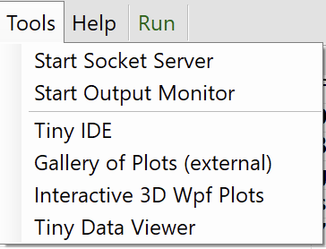
Start Socket Server starts the socket server, see here for details.
Start Output Monitor starts the output monitor application, see here for details.
Tiny IDE starts the Tiny IDE application, see here for details.
Gallery of Plots starts the gallery of plots application, see here for details.
Interactive 3D Wpf Plots starts the Interactive 3D Wpf Plots application, see here for details.
Tiny Data Viewer starts the Tiny Data Viewer application, see here for details.

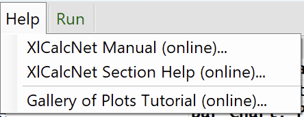
In the Help menu, XlCalcNet Manual (online)... displays the start page of the XlCalcNet online manual in a web browser.
XlCalcNet Section Help (online)... displays the section of the XlCalcNet.online manual which corresponds to the current file in a web browser.
Interactive 3D plots Tutorial (online)... displays the section of the XlCalcNet.online manual which explains the use of the Interactive 3D plots application in a web browser.
The General section in the edtior property grit#
As described above, the plot definition is edited in a property grid:

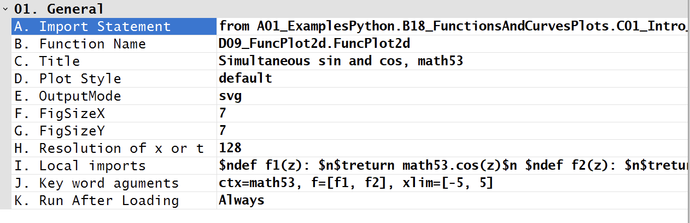
The example above shows the plot definition of the file \GalleryOfPlotsExamples\B18_FunctionsAndCurvesPlots\C01_Intro_Parametric2D\D09b_SinCosMath53.2D.xml.

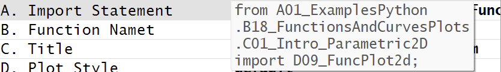
A. Import Statement contains the import statement.

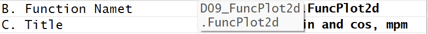
B. Function Name contains the function name.
C. Title contains the function title.

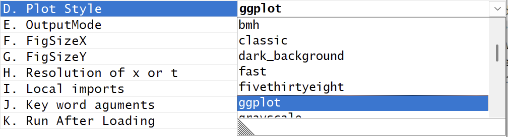
D. PlotStyle contains the plotstyle (see above).

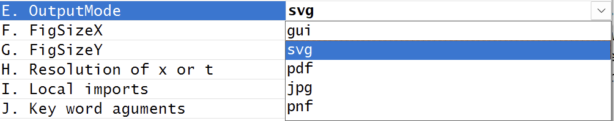
E. OutputMode contains the Output Mode (see above).
G. FigSizeX contains the size of the figure in x (horizontal) direction.
F. FigSizeY contains the size of the figure in y (vertical) direction.

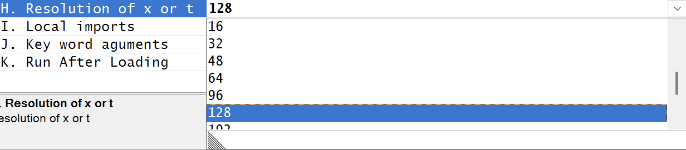
H. Resolution of x or t contains the resolution of x or t.

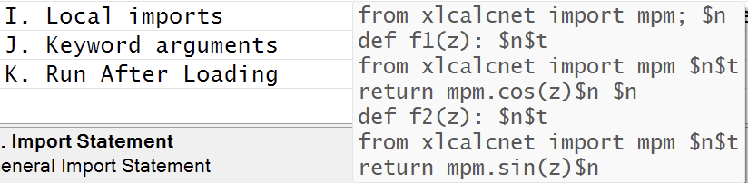
I. Local imports contains the local imports and definitions before the function call.

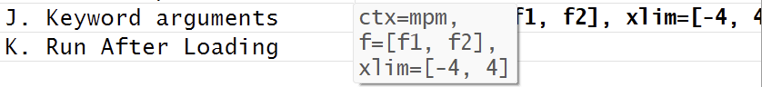
J. Keyword arguments contains the which passed to function.
Some text

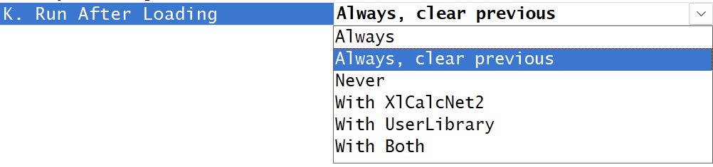
K. Run After loading determines whether and how the plot definition is run after loading (see above).
Source code#
The C# source code for the gallery of plots can be found here: duhadler/XlCalcNet
Interactive 3D wpf plots#
The “Interactive 3D Wpf Plots” application is started from the Tiny IDE: in the main menu, click on Tools -> Interactive 3D Wpf Plots. The screenshot below shows an example

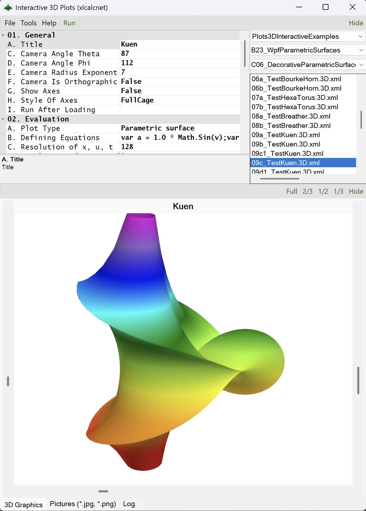
The “Interactive 3D Wpf Plots” application is designed around the structure of the DataXlCalcNet folder, making it easy to navigate and manage existing 3D plot definition examples, as well a new definitions written by the user.
This application can be used only to edit and run 3D plot definition examples which are located in the DataXlCalcNet folder and are located in subfolders beginning with Plots3D. The code examples are organized in a tree structure, which is shown in the top right panel (the “folder panel”) of the application.
The top left panel (the “3D plot definition editor panel”) of the application shows the 3D plot definition of the selected file, which can be edited and run. The 3D plot definition is stored as an \(.xml\) file, but is edited in a property grid. This allows to structure the definition in the sections 0.1 General, 02. Evaluation, 03. Reshaping, Formatting, and to use drop down menus to make the definition of the 3D plot easier.
The output of the program is shown in the bottom panel (the “output panel”) of the application, which has 3 tabs: the “3D graphics” tab, which displays the interactive 3D plot; the “Pictures” tab, which shows available pictures which can be used as textures; and the “Log” tab, which documents the progress of compiling and running the code containing the “Defining Equations” and the “Expression Evaluator” (and also displays warning and error messages).
Each file in the DataXlCalcNet\Plots3D* folders can be opened in the application by clicking on it. Per application instance, only one file can be opened, edited and run at a time
(to open an additional file, you need to start a new instance of the application: Tools -> Interactive 3D Wpf Plots).
The application will load this file into the 3D plot definition editor, and the 3D plot definition can be edited and run. To run the 3D plot definition, click on the “Run” button in the main menu. The output is shown in the output panel.
The ordering and naming of the 3D plot definition examples in the subfolder Plots3DWpfExamples match the ordering and naming of the corresponding chapters, sections and subsections in this manual, making it easy to find the 3D plot definition example which corresponds to a specific section of the manual. The “section help” feature (Help -> Section Help), which is available in the main menu of the application and opens the corresponding section of this manual in a web browser, depends on this ordering and naming.
The menu bar of the application#

The Menubar of the “Interactive 3D Wpf Plots” application contains the following menus: File, Tools, and Help. Each menu contains a number of items, which are described below.
There are also two buttons (with green foreground color) in the menu bar: the “Run” button, which runs the code of the current file, and the “Show/Hide” button, which toggles the visibility of the folder panel.

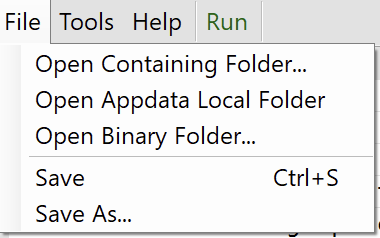
In the File menu, two standard items are missing: “New” and “Open”.
The “New” item is missing because the Tiny IDE is designed to work within the DataXlCalcNet folder, and therefore new files which are not in the current folder should be created in the appropriate subfolders of DataXlCalcNet, which often have to be created manually first using the Windows Explorer.
There is, however, a Save As item in the file menu, which allows to save the current file under a new name in the current folder. This is useful for creating a copy of an existing file, and using this as a starting point for a new file.
The “Open” item (which would typically open a dialog box with the functionally of the Windows Explorer) is missing because the Tiny IDE is limited to the DataXlCalcNet folder. Instead the folder panel allows to navigate through the DataXlCalcNet folder and open any file in it.
Renaming or deleting files and folders is possible, but should be done with care, using the Windows Explorer, and not using the Tiny IDE. After these changes, when returning to the Tiny IDE, the tree structure will not be updated automatically, but has to be updated manually by clicking on the appropriate parent folder in the tree structure.
Open Containing Folder opens the Windows Explorer in the folder of the current file. This is useful for quickly accessing other files in the same folder, or for deleting files and folders.
Open Appdata Local Folder opens the Windows Explorer in the AppData\Local\XlCalcNetIDE folder. This is useful for quickly accessing files and folders which are generated by running Python or C# code examples in the Tiny IDE.
Open Binary Folder opens the Windows Explorer in the Bin subfolder of the XlCalcNet installation. This is useful mostly for debugging purposes.
Save will just save the current file without any further action. Save As has been descibed above. Exit will close the Tiny IDE.

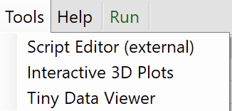
Tiny IDE starts the Tiny IDE application, see here for details.
Output Monitor (external) starts an additional instance of the the “Output Monitor” application, see here for details.
Gallery of Plots starts the gallery of plots application, see here for details.
Interactive 3D Wpf Plots (external) starts an additional the Interactive 3D Wpf Plots application, see here for details.
Tiny Data Viewer starts the Tiny Data Viewer application, see here for details.

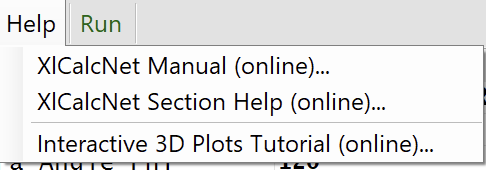
In the Help menu, XlCalcNet Manual (online)... displays the start page of the XlCalcNet online manual in a web browser.
XlCalcNet Section Help (online)... displays the section of the XlCalcNet.online manual which corresponds to the current file in a web browser.
Interactive 3D plots Tutorial (online)... displays the section of the XlCalcNet.online manual which explains the use of the Interactive 3D plots application in a web browser.


The General section in the edtior property grit#
The General section in the edtior property grit contains the following items:

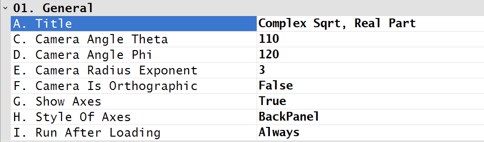
A. Title contains the title of the graphics
C. Camera Angle Theta contains the camera angle theta.
D. Camera Angle Phi contains the camera angle phi.
E. Camera Radius Exponent contains the camera radius exponent.
F. Camera Is Orthographic determines if the camera is orthographic or perspective.
G. Show Axes determines if axes are shown in the graphics.

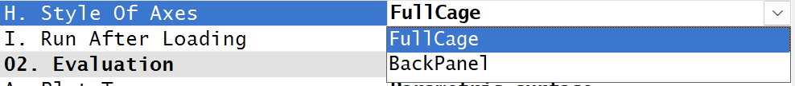
H. Style Of Axes determines the style axes (if any).

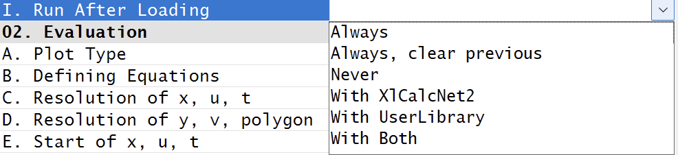
I. Run After Loading determines the action which occurs after loading the plot definition.
The Evaluation section in the edtior property grit#
The Evaluation section in the edtior property grit contains the following items:

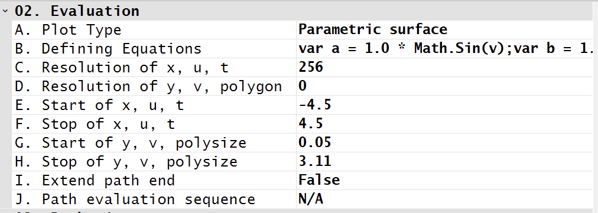

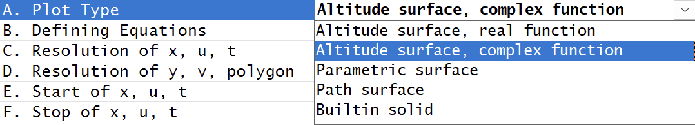
A. Plot Type determines the plot type.

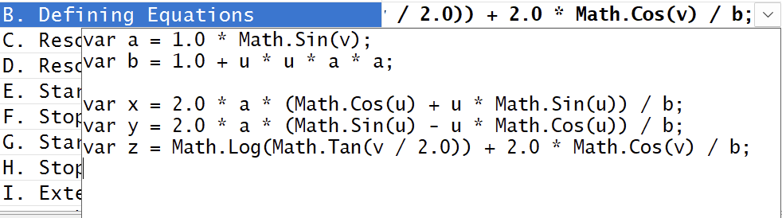
B. Defining equations contains the C# code for the equations which define the graphics.

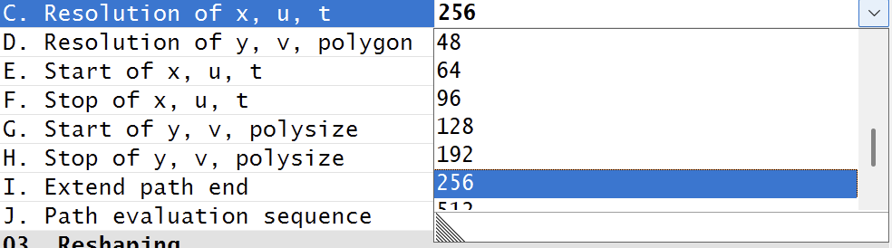
C. Resolution of x, u, t determines the resolution of the variable, x ,u or t, depending on the plot type.

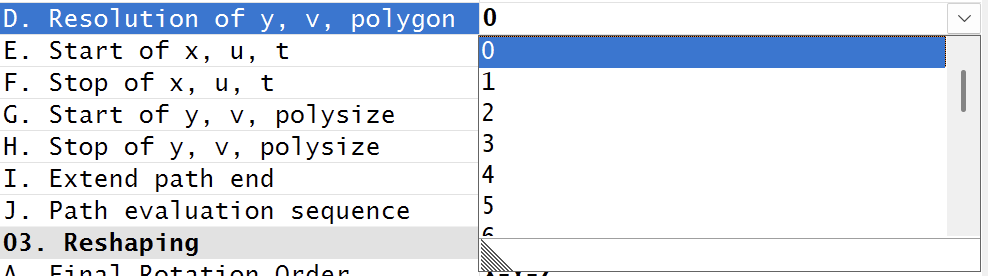
D. Resolution of y, v, polygon determines the resolution of the variable, y ,v or polygon, depending on the plot type.

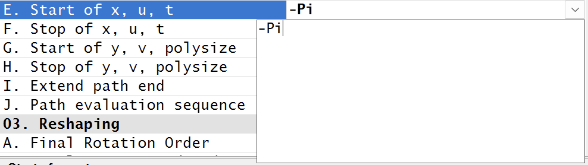
E. Start of x, u, t determines the start of the variable, x ,u or t, depending on the plot type.
F. Stop of x, u, t determines the stop of the variable, x ,u or t, depending on the plot type.
G. Start of y, v, polygon determines the start of the variable, y ,v or polygon, depending on the plot type.
H. Stop of y, v, polygon determines the stop of the variable, y ,v or polygon, depending on the plot type.
I. Extend path end determines if the path end is extended to close the path. Only relevant for path surfaces.

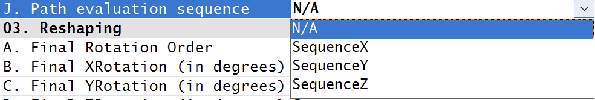
J. Path evaluation sequence determines the path sequence which is used for optimal results. Only relevant for path surfaces.
The Reshaping section in the edtior property grit#
The Evaluation section in the edtior property grit contains the following items:

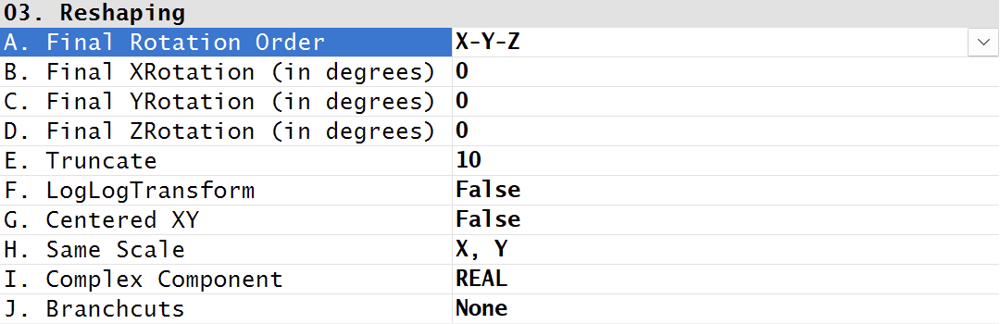

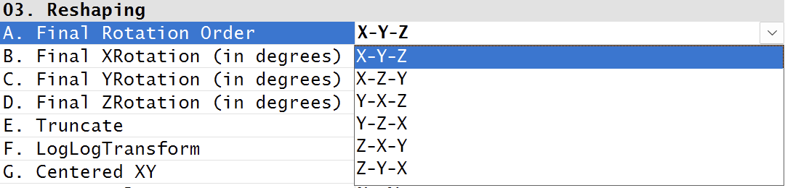
A. Final Rotation Order Sets the order for the final rotation (if any).
B. Final XRotation (in degrees) Rotation around the X axis (in degrees).
C. Final YRotation (in degrees) Rotation around the Y axis (in degrees).
D. Final ZRotation (in degrees) Rotation around the Z axis (in degrees).
E. Truncate Sets the truncation threshold for the Z axis.
F. LogLogTransform determines if the LogLog transform is applied.
G. Centered XY determines if x,y are centered or not.

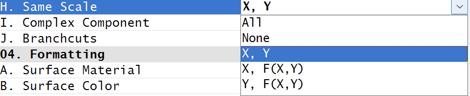
H. Same Scale determines which axes are using the same scale.

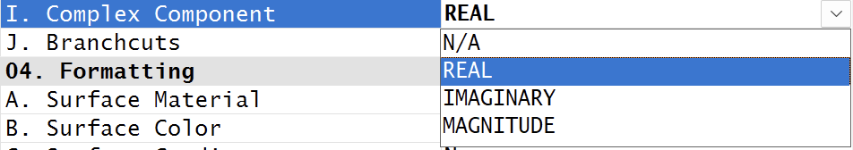
I. Complex Component determines which complex component is used. Only relevant if the plot type is Altitude surface, complex function.

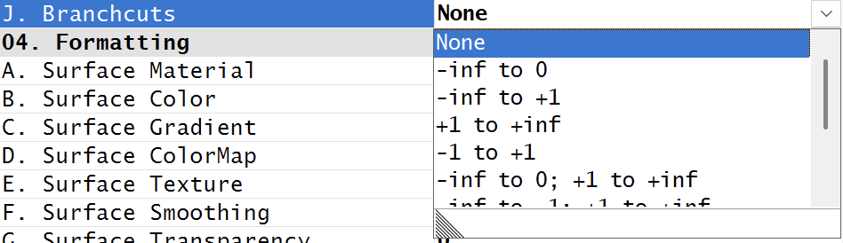
J. Branchcuts determines which brachcuts. Only relevant if the plot type is Altitude surface, complex function.
The Formatting section in the edtior property grit#
The Formatting section in the edtior property grit contains the following items:

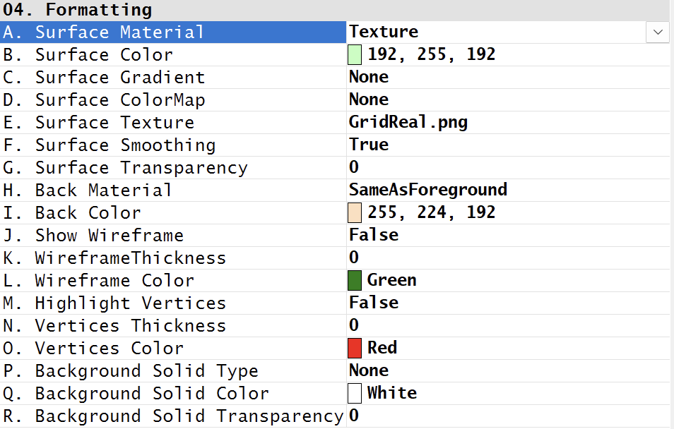

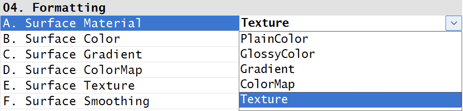
A. Surface Material determines which surface material is used.

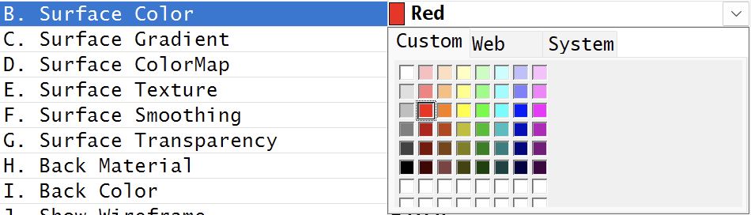
B. Surface Color determines which surface color is used. Note that there are 3 different tabs which can be used to choose the color. Only relevant the surface material is Plain Color or Glossy Color.

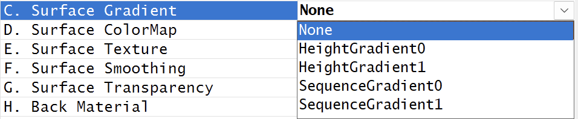
C. Surface Gradient determines which surface gradient is used.. Only relevant if the surface material is Gradient.

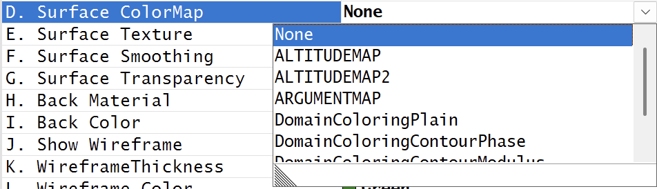
D. Surface ColorMap determines which surface colormap is used.. Only relevant if the surface material is ColorMap.

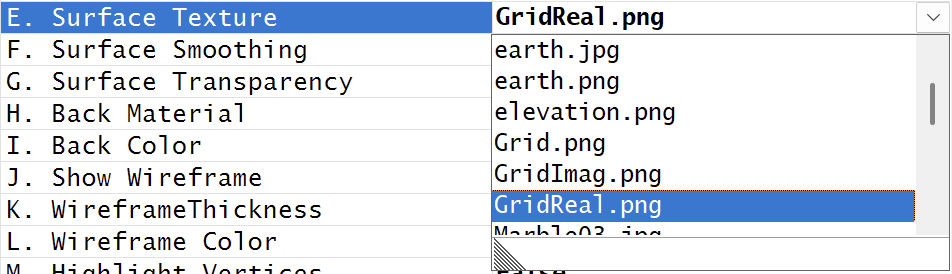
E. Surface Texture determines which texture is used.. Only relevant if the surface material is Texture.
F. Surface Smoothing determines if surface smoothing is applied.
G. Surface Transparency determines the amount of surface transparency (from o to 255).

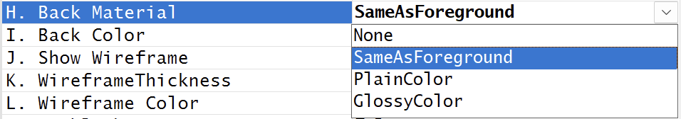
H. Back Material determines the background material.
I. Back Color determines the background color.
J. Show Wireframe determines if a wireframe is shown.
K. Wireframe Thickness determines the wireframe thickness.
L. Wireframe Color determines the wireframe color.
M. Highlight Vertices determines if vertices are highlighted.
N. Vertices Thickness determines the thickness of the vertices.
O. Vertices Color determines the color of the vertices.

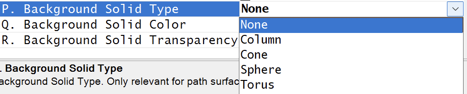
P. Background Solid Type determines the type of the background, if any.
Q. Background Solid color determines the color of the background, if any.
R. Background Solid Transparency determines the amount of surface transparency (from o to 255).
Source code#
The Python source code for starting the IDE can be found here: duhadler/XlCalcNet
The C# source code for the gallery of plots can be found here: duhadler/XlCalcNet
Much of the C# code of this application is based on Stephens [507].
Information about installation status of supporting python packages#
- gui.info()#
Support for Matplotlib output in a separate process
>>> from xlcalcnet import gui >>> gui.info()
- gui.has_gpm()#
Returns True if gmpy2 is installed
>>> from xlcalcnet import gui >>> gui.has_gpm()
- gui.has_apm()#
Returns True if python-flint is installed
>>> from xlcalcnet import gui >>> gui.has_apm()
- gui.has_xlcalcnet2()#
Returns True if xlcalcnet2 is installed
>>> from xlcalcnet import gui >>> gui.has_xlcalcnet2()
Information about context lists, and setting global precision#
- property gui.ctxlistreal#
Returns a list of all available numerical contexts supporting real data types
>>> from xlcalcnet import gui >>> gui.ctxlistreal
- property gui.ctxlistcplx#
Returns a list of all available numerical contexts supporting complex data types
>>> from xlcalcnet import gui >>> gui.ctxlistcomplex
- gui.setdps(dps)#
Sets the decimal precision for all multiprecision data types
>>> from xlcalcnet import gui >>> dps = 50 >>> gui.setdps(dps)
Support for running interactive Matplotlib output in a separate process#
There is support for Matplotlib output in a separate process
See also: https://matplotlib.org/stable/users/explain/figure/interactive.html#default-ui
- property gui.plot(fig, file, fname)#
Support for Matplotlib output in a separate process
>>> from xlcalcnet import gui >>> gui.plot(fig, file, fname)